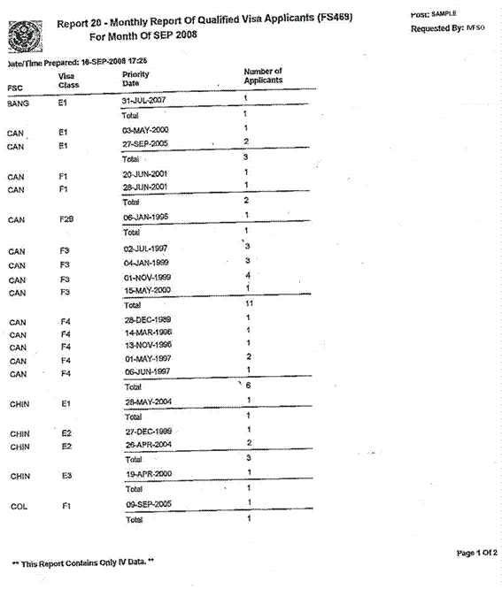
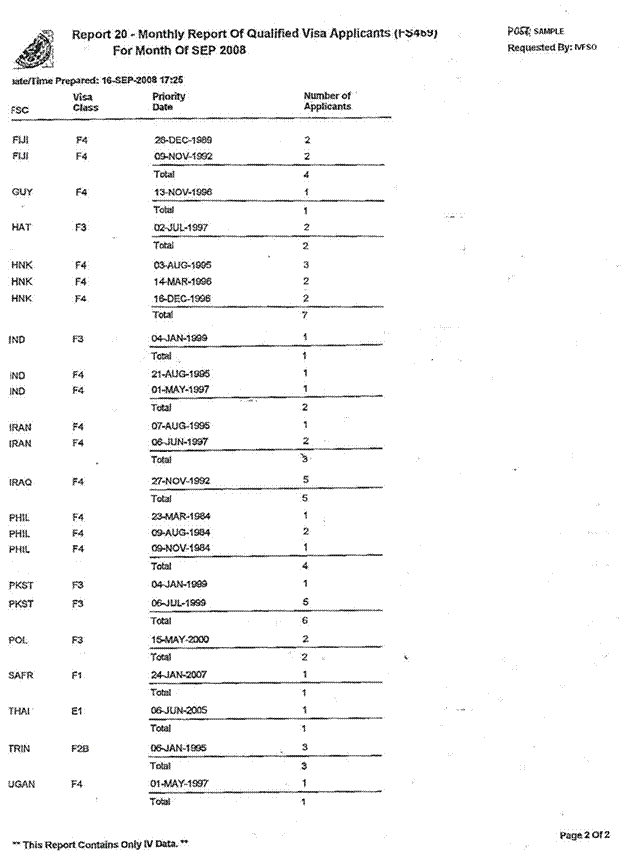
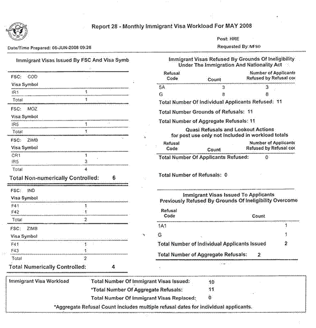
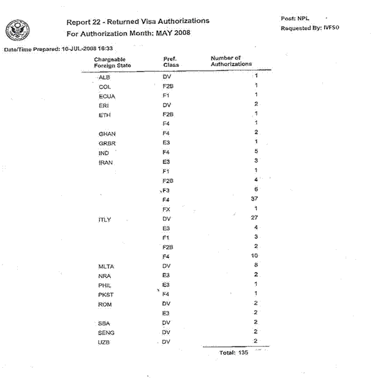

(U) Managing Immigrant Visa Numbers
(CT:VISA-1942; 03-07-2024)
(Office of Origin: CA/VO)
9 fam 504.3-1 (U) related Statutory and Regulatory auThoritIES
9 FAM 504.3-1(A) (U) Immigration and Nationality Act
(CT:VISA-1; 11-18-2015)
(U) INA 201 (8 U.S.C. 1151); INA 202 (8 U.S.C. 1152); INA 203 (8 U.S.C. 1153); INA 204 (8 U.S.C. 1154); INA 222(b) (8 U.S.C. 1202(b)).
9 FAM 504.3-1(B) (U) Code of Federal Regulations
(CT:VISA-1; 11-18-2015)
(U) 22 CFR 40.1(h); 22 CFR 42.51; 22 CFR 42.52; 22 CFR 42.54; 22 CFR 42.55.
9 FAM 504.3-2 (U) Communicating About Visa Numbers
(CT:VISA-171; 09-06-2016)
(U) See the IVO application users’ manual for instructions for preparing and submitting Reports 20, 28, and 22 described in 9 FAM 504.3-2(A), (C), and (D) below.
9 FAM 504.3-2(A) (U) Monthly Reports of Qualified Applicants
(CT:VISA-1942; 03-07-2024)
a. (U) The documentarily complete figures submitted monthly (see 22 CFR 42.52 and 9 FAM 504.4-5(A)(3)) provide the Department the known total (by priority date, chargeability, classification, and post) of visa applicants who are awaiting only visa numbers to apply formally for a visa. After collation of these data, the Department makes monthly allotments to the extent available visa numbers permit. (See 22 CFR 42.51 and 9 FAM 503.4.) If demand exceeds the supply of available numbers, the priority date of the first applicant for whom a number is not available becomes the Final Action Date for the categories and foreign states concerned. The documentarily complete totals are used for setting the Final Action Dates. It is therefore essential that the following general guidelines be strictly observed in preparing the monthly reports of documentarily complete applicants:
(1) (U) All IV processing posts having documentarily complete demand to report, as well as NVC, must prepare Report 20, Monthly Report of Documentarily Complete Immigrant Visa Demand, and submit it so that it arrives in the Department (CA/VO/DO/I) before the first working day of the month. The automated IV processing system is used to generate this report and submit it via email. See 22 CFR 40.1(h) and 9 FAM 504.3-2(A)(1) below. A Sample Report 20 is shown in paragraph b below.
(2) (U) Data entry must be kept up to date so that all applicants who have become documentarily complete during the reporting period are included.
(3) (U) No applicant’s priority date should be reported twice unless an allocation was made based on a previous documentarily complete report and the applicant was not scheduled due to limited post capacity, failed to keep the appointment or was not qualified for a visa at that time and the number was returned.
b. (U) Sample Report 20:


9 FAM 504.3-2(A)(1) (U) Preparation of the "Documentarily Qualified" (Documentarily Complete) Report
(CT:VISA-1942; 03-07-2024)
a. (U) "Documentarily Qualified" Defined: "Documentarily qualified" or "documentarily complete" means that the applicant has returned Form DS-2001, Notification of Applicant Readiness, indicating that all the required documents have been obtained (or has otherwise so informed the post), and that the post has completed its clearance procedures.
b. (U) Preference Applicants to be Reported by Priority Date: All preference applicants must be reported by priority dates, irrespective of the status of the numerical limitations to which they are subject.
c. (U) Foreign State and Post Symbols to be Used: The foreign state/dependent area alphabetical code must appear in lieu of the name of each chargeability area on the report. See 9 FAM 503.2-5(A) and 9 FAM 503.2-5(B) for these codes. The visa-issuing office symbol will automatically appear on the Report 20.
d. (U) Relationship to Post's Workload Capacity: The report must include all applicants who have become documentarily complete in that monthly period by priority date, irrespective of the post's capability to process that number of cases. If the total exceeds the post's capacity to interview (and issue if appropriate), post must notify the Visa Office (NVC and CA/VO/DO/I) by cable or e-mail of its capacity for any month in which such a capacity limitation is applicable, together with the reason(s) for the limitation. See 9 FAM 504.3-2(D) below.
e. (U) Duplicative Reporting to be Avoided: The Department records reported demand for which visa numbers are not immediately available (oversubscribed categories), for consideration for later allotments. The post should not repeat previously reported pending demand in subsequent reports.
f. (U) Applicants Entitled to Two or More Classifications: If a documentarily complete applicant is entitled to two or more classifications, post should report the applicant under the classification which will allow the most expeditious processing or report the applicant under both categories.
g. (U) Negative Reports Not Required: IV-issuing posts that have no reportable applicants for a given month need not submit a negative Report 20.
9 FAM 504.3-2(A)(2) (U) Grouping of Priority Dates by the Department
(CT:VISA-1; 11-18-2015)
(U) When posts submit Report 20 in electronic form, the reported priority dates will be grouped in the Department under the first day of the month and every 7 days thereafter. The weekly periods always begin on the 1st, 8th, 15th, and 22nd of the month. The priority dates will be grouped under the reportable date at the beginning of the applicable week. For example, priority dates from March 1 through March 7, 2007, will be grouped under 01MAR2007.
9 FAM 504.3-2(A)(3) (U) Diversity (DV) Applicants
(CT:VISA-1942; 03-07-2024)
Unavailable
9 FAM 504.3-2(B) Unavailable
(CT:VISA-1942; 03-07-2024)
Unavailable
(1) Unavailable
(2) Unavailable
(3) Unavailable
(4) Unavailable
(5) Unavailable
(6) Unavailable
9 FAM 504.3-2(C) (U) Immigrant Visa Workload Monthly Reports
(CT:VISA-1223; 02-08-2021)
(1) (U) Monthly Report of IVs Issued: At the end of each month, all posts authorized to issue IVs must prepare and transmit the Immigrant Visa Workload Monthly Report (Report 28 in the automated IV processing system) to the Visa Office (CA/VO/DO/I), Attn: IVAMS. This report will reflect all IVs and DVs issued during the month, as well as refusal data. (See paragraph (3) below.) The report must be submitted within 5 business days after the close of each reporting period.
(2) (U) Reports Requiring Adjustment: Posts whose Report 28 requires adjustments to the workload data must specify by email the adjustments that are needed.
(3) (U) Sample Report 28:

9 FAM 504.3-2(D) (U) Additional Reporting
(CT:VISA-1942; 03-07-2024)
a. (U) Deletion of Priority Dates: Reported demand which has been encompassed in an allotment of visa numbers is automatically removed from the Department's records. It is not necessary for the post to request that the Department delete such demand. However, if a previously reported applicant who has not been reached for an allocation dies or abandons the intent to immigrate, then the priority date, chargeability, category, and number of applicants should be reported with a request to delete the case from the allocation waiting list.
b. (U) Return of Unused Numbers:
(1) (U) Posts must return promptly to the Department any visa allocations (both preference and DV) that have not been used during the authorized month. Preference and diversity numbers may be returned on the same Report 22. The Report 22 must be dispatched no later than the fifth business day of each month. See paragraph c below regarding return of numbers used for issuance of visas that were not used for admission to the United States.
(2) (U) Sample Report 22 - Monthly Returns of Unused Visa Numbers:

c. (U) Recaptured Visas: A recaptured visa is a visa that is known to have not been used (e.g., the bearer died or was unable to travel during the validity period). Such visas should be recaptured and the visa number returned to the Department unless the same applicant wants to replace their visa during the same fiscal year. See 9 FAM 504.10-5.
(1) (U) Importance of Prompt Return: Posts must return recaptured numbers to the Department (CA/VO/DO/I) as soon as they have been recaptured. A visa number returned during the fiscal year of original issuance may be reallocated by the Department during the same fiscal year. It is essential that visa numbers recaptured near the end of a fiscal year be returned as promptly as possible so that they may be used elsewhere before the end of the fiscal year.
(2) (U) “VISAS GIRAFFE” Format: Posts must return recaptured visa numbers by email using the subject line: “GIRAFFE - Recaptured Visa Numbers.” This is designed to preclude any possible confusion of these returns with returns of other unused visa numbers. The issuance date (month and year), foreign state or dependent area of chargeability, preference category, and quantity of the allotted number(s) being returned should also be indicated. See 9 FAM 604.2-3(B) for "VISAS GIRAFFE" format. Posts should make a notation of the recapture and return in their records.
(3) (U) “Recaptured” Immediate Relative Visa: Immediate relative visas are not subject to numerical limit, and therefore no visa numbers are allocated or used for immediate relative visa issuances. Under the terms of the INA as revised by the Immigration Act of 1990, however, each year’s total of immediate relatives must be considered when the Department calculates the family preference numerical limit for the following year. Thus, it is important for the Department to know when immediate relative visas are unused by the recipients so that such visas will not be counted in determining the family preference limit. Posts are asked to report such “recaptured” immediate relative visas to CA/VO/DO/I in the same way as recaptured visa numbers; they should be identified as “Recaptured Immediate Relative Visa(s),” and the month and year of visa issuance should be indicated.
d. (U) Significant Factors Affecting Visa Work: Posts should explain by email any significant factors or unusual circumstances that affect the visa operation, such as changes in the volume or characteristics of demand and must describe the nature and extent of any backlogs, the reasons for this, actions taken by the post to correct known deficiencies, when the issue is expected to be corrected, and any other information the Department might find useful or the post believes needs to be amplified.
e. (U) Annual Report of IV Applicants Subject to Numerical Limitations: The Annual Report of Immigrant Visa Applicants Subject to Numerical Limitations (Report 29 in the automated system) is no longer required unless specifically requested by the Department, in which case instructions will be provided.
9 FAM 504.3-3 (U) Change of Foreign-State Chargeability
9 FAM 504.3-3(A) (U) When Post Action is Required
(CT:VISA-845; 06-04-2019)
(U) NVC checks every petition to determine whether the applicant may benefit from the foreign-state chargeability of the spouse under INA 202(b) (see 9 FAM 503.2-4(A)). In some cases, however, such as when the applicant provides new information to post during the application process, it may be necessary to correct foreign-state chargeability, update IVO records as well as the DS-260, and request new IV numbers. See 9 FAM 503.2-4 for a description of the exceptions to the rule of chargeability.
9 FAM 504.3-3(B) (U) Change of Foreign-State Chargeability (FSC) Process
(CT:VISA-1406; 11-02-2021)
a. (U) Update IVO:
(1) (U) Case Record: The applicant’s case record in IVO will need to be updated to reflect the applicant’s new FSC. This includes changing the FSC on the “applicant tab” as well as updating the “visa info” under “annotations” to reflect the basis for the change.
(2) (U) Visa Number Allocation:
(a) (U) In the event that post has sufficient numbers in the relevant category and FSC, a number can be allocated to the applicant.
(b) (U) If a visa number has not been allocated, a "VISAS FROG" message requesting a number will need to be sent if you intend to issue within that month. See 9 FAM 504.3-2(B) for directions on how to prepare a "VISAS FROG."
(3) (U) Annotate Visa: If the applicant’s case record is updated correctly as described above, the visa will be annotated automatically to indicate the bases for the change of FSC. In the circumstances described in paragraph b below, however, in which the principal applicant derives a more favorable FSC from their spouse, the visas must be annotated to also state that the visa is valid only if accompanied by the spouse.
b. (U) When Simultaneous Issuance of Visas is Required: When one IV applicant can confer a more favorable preference status upon another at the same time the other IV applicant can confer a more favorable foreign state chargeability, both applicants may be considered principal applicants. In such cases, both applicants must be admitted to the United States simultaneously. Therefore, you must issue the visas simultaneously to both applicants since neither party is allowed to precede the other spouse and both spouses must apply together for admission into the United States. For example, if the principal applicant was born in India and the accompanying spouse in France, the principal applicant born in India may be charged to his spouse’s country of chargeability (France) if the priority date is not current for India. See 9 FAM 503.2-4(A).